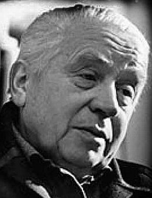
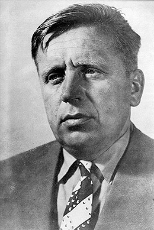

Branko Ćopić (Hašani, Bosanska Krupa, 1. januar 1915 – Beograd, 26. mart 1984), bio je bosanskohercegovački književnik.
Osnovnu školu je završio u rodnom mjestu, nižu gimnaziju u Bihaću,a učiteljsku školu pohađa u Banjoj Luci i Sarajevu, te je završava u Karlovcu. Na Filozofskom fakultetu Sveučilišta u Beogradu diplomira 1940. godine, pedagoško-filozofsku grupu. Prvu priču objavljuje 1928. godine, a prvu pripovijetku 1936. Djela su mu prevođena na engleski, njemački, francuski i ruski. Bio je član SANU (Srpske akademije nauka i umjetnosti) i ANUBiH (Akademije nauka i umjetnosti Bosne i Hercegovine). Izvršio je samoubojstvo, skokom s mosta na Savi u Beogradu 26. ožujka 1984. godine.
Pod Grmečom, pripovijetke, Beograd, 1938. Borci i bjegunci, pripovijetke, Beograd, 1939. Ognjeno rađanje domovine, poezija, Sarajevo, 1944. Priče partizanke, Sarajevo, 1944. Bojna lira pionira, poezija, Zagreb, 1945. Sveti magarac i druge priče, Beograd, 1946. U svijetu medvjeda i leptirova. Doživljaji mačka Toše, Zagreb, 1946. Ratnikovo proljeće, poezija, Sarajevo, 1947. Sunčana republika, pjesme, Sarajevo, 1948. Rudar i mjesec, pjesme, Beograd, 1948. Ježeva kućica, poezija, Beograd, 1949. Šest vukova i jedan rep, pjesme, Zagreb, 1949. Prolom, roman, Beograd, 1952. Priče ispod zmajevih krila, Sarajevo, 1953. Stari nevjernik, priče, Sarajevo, 1953. Doživljaji Nikoletine Bursaća, priče, Sarajevo, 1956. Orlovi rano lete, roman, Sarajevo, 1957. Lalaj Bao, Čarobna šuma, poezija, Sarajevo, 1957. Gluvi barut, roman, Beograd, 1957. Ne tuguj, bronzana stražo, roman, Sarajevo, 1958. Partizanske tužne bajke, pjesme, Sarajevo, 1958. Djeda Trišin mlin, poezija, Sarajevo, 1960. Magareće godine, roman, 1960. Slavno vojevanje, priče, Sarajevo, 1961. Bitka u Zlatnoj dolini, priče, Sarajevo, 1963. Osma ofanziva, roman, Sarajevo, 1964. Sabrana djela I-XII, Beograd - Sarajevo, 1964. Otac Grmeč, Banja Luka, 1969. Bašta sljezove boje, priče, Beograd, 1970. Glava u klancu, noge na vrancu, priče, Sarajevo, 1971. Mala moja iz Bosanske Krupe, poezija, Sarajevo, 1971. Sabrana djela I-XIV, Beograd - Sarajevo, 1975. Delije na Bihaću, roman, Sarajevo, 1976. Golubija vremena, poezija, Mostar, 1978. Lijan vodi karavane, pripovijetke, Sarajevo, 1981. Sabrana djela I-XVI, Beograd, 1982.